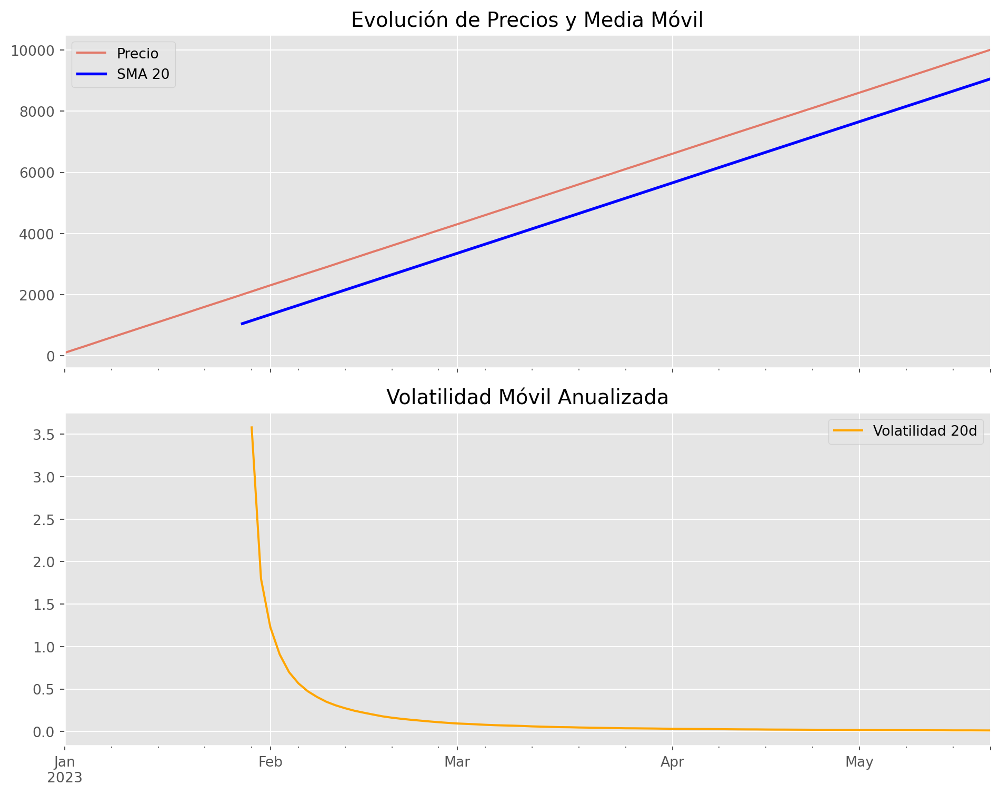

import pandas as pd
import numpy as np
import matplotlib.pyplot as plt
# Configuración estética para los gráficos
plt.style.use('ggplot')7 Capítulo 5: Series de Tiempo y Análisis de Datos con Pandas
Estructuras de Datos, Manipulación y Cálculos Financieros
Resumen
Introducción a pandas como herramienta fundamental para la carga, limpieza y análisis de datos en finanzas. Estudiamos Series y DataFrames, manipulación de series temporales, cálculos vectorizados de retornos, ventanas móviles y visualización técnica.
8 Introducción
En los capítulos anteriores, utilizamos listas y diccionarios para representar datos de instrumentos financieros. Sin embargo, en el mundo real, los datos suelen ser tabulares y masivos (decenas de miles de cotizaciones). Pandas es la librería estándar de Python diseñada específicamente para este propósito, ofreciendo estructuras de datos de alto rendimiento y herramientas de análisis intuitivas.
9 Introducción a Pandas
Pandas es una librería esencial para la carga, limpieza, análisis y exportación de datos. Se integra perfectamente con el ecosistema de Python (NumPy, SciPy y Matplotlib).
9.1 Series (1D)
Una Serie es una estructura unidimensional etiquetada con un índice. Soporta operaciones vectorizadas y métodos estadísticos básicos.
precios_serie = pd.Series([110, 112, 108, 115, 120],
index=["Lunes", "Martes", "Miércoles", "Jueves", "Viernes"],
name="Precios")
print(precios_serie)
print(f"\nMedia: {precios_serie.mean():.2f}")
print(f"Desvío estándar: {precios_serie.std():.2f}")Lunes 110
Martes 112
Miércoles 108
Jueves 115
Viernes 120
Name: Precios, dtype: int64
Media: 113.00
Desvío estándar: 4.699.2 DataFrames (2D)
Un DataFrame es una estructura tabular (filas y columnas) donde cada columna es, técnicamente, una Serie que comparte el mismo índice.
datos = {
"Ticker": ["GD30", "GD35", "GD38", "GD41", "GD46"],
"Precio": [92.5, 85.3, 78.1, 72.4, 65.8],
"Cercanía": [0.08, 0.07, 0.065, 0.06, 0.055]
}
df = pd.DataFrame(datos)
print(df) Ticker Precio Cercanía
0 GD30 92.5 0.080
1 GD35 85.3 0.070
2 GD38 78.1 0.065
3 GD41 72.4 0.060
4 GD46 65.8 0.0559.3 Exploración Inicial
Antes de analizar datos, debemos inspeccionar su estructura mediante métodos clave:
print(f"Dimensiones: {df.shape}")
print(f"Columnas: {df.columns.tolist()}")
# Métodos esenciales de inspección
# df.head() # Primeras 5 filas
# df.tail() # Últimas 5 filas
# df.info() # Resumen de tipos de datos y memoria
# df.describe() # Estadísticas descriptivas rápidasDimensiones: (5, 3)
Columnas: ['Ticker', 'Precio', 'Cercanía']10 Lectura, Escritura y Alineación de Datos
10.1 I/O de Archivos
Pandas permite la ingesta de datos desde múltiples fuentes (read_csv, read_excel) y el guardado de resultados (to_csv, to_excel).
# Ejemplo hipotético de lectura
# df = pd.read_csv("historico.csv", sep=";", encoding="utf-8")
# Parámetros útiles al leer:
# parse_dates=['Fecha']: Convierte columnas a objetos Datetime directamente.
# index_col='Fecha': Establece una columna como índice del DataFrame.10.2 Alineación de Índices e Integración de Datos
La alineación automática es un concepto crítico en finanzas. Si combinamos dos activos que cotizan en días distintos (debido a feriados locales), Pandas se asegura de alinear las fechas correctamente.
Para combinar datasets utilizamos: - merge(): Unión por columnas (similar a un JOIN de SQL). - join(): Unión eficiente usando el índice (ideal para DatetimeIndex). - concat(): Apilado vertical u horizontal.
Tipos de uniones: inner, outer (por defecto en concat), left y right.
df_a = pd.DataFrame({"Ticker": ["GD30", "AL30"], "Tir": [0.45, 0.52]})
df_b = pd.DataFrame({"Ticker": ["GD30", "AL30"], "Paridad": [0.35, 0.32]})
df_unido = pd.merge(df_a, df_b, on="Ticker", how="inner")
print(df_unido) Ticker Tir Paridad
0 GD30 0.45 0.35
1 AL30 0.52 0.3211 Selección y Filtrado
11.1 Indexación: .loc vs .iloc
.loc: Busca por etiquetas de índice y nombres de columnas..iloc: Busca por posición numérica (0-indexed).
# Seleccionar fila 0 y columna 'Precio' por posición
print(f"Precio GD30 (.iloc): {df.iloc[0, 1]}")
# Seleccionar por etiqueta (si el ticker fuera el índice)
df_idx = df.set_index("Ticker")
print(f"Precio GD30 (.loc):\n{df_idx.loc['GD30', 'Precio']}")Precio GD30 (.iloc): 92.5
Precio GD30 (.loc):
92.511.2 Filtrado Booleano y Máscaras
Permite filtrar filas según condiciones lógicas o pertenencia a listas mediante .isin().
# Bonos con precio mayor a 80
mascara = df["Precio"] > 80
print(df[mascara])
# Filtrar por múltiples valores
tickers_interes = ["GD30", "GD46"]
print(df[df["Ticker"].isin(tickers_interes)]) Ticker Precio Cercanía
0 GD30 92.5 0.08
1 GD35 85.3 0.07
Ticker Precio Cercanía
0 GD30 92.5 0.080
4 GD46 65.8 0.05512 Manejo de Fechas y Series Temporales
Pandas es excepcionalmente potente para trabajar con frecuencias temporales. Primero convertimos datos a tipo fecha con pd.to_datetime() y establecemos un DatetimeIndex.
fechas = ["2023-01-01", "2023-01-02", "2023-01-05"] # 02 es lunes, 01 es domingo
df_time = pd.DataFrame({"Precio": [100, 101, 102.5]}, index=pd.to_datetime(fechas))
print(df_time.index)DatetimeIndex(['2023-01-01', '2023-01-02', '2023-01-05'], dtype='datetime64[ns]', freq=None)12.1 Resample: Cambio de Frecuencias
El método resample() permite agrupar datos por períodos (diario ‘D’, semanal ‘W’, mensual ‘M’) y aplicar funciones de agregación.
# Simulamos una serie diaria para ejemplo
df_diario = pd.DataFrame({
"Precio": np.random.normal(100, 1, 100).cumsum()
}, index=pd.date_range("2023-01-01", periods=100, freq="B"))
# Cambiar de diario a mensual tomando el último valor
df_mensual = df_diario.resample("M").last()
print(df_mensual.head(3)) Precio
2023-01-31 2207.953522
2023-02-28 4205.099988
2023-03-31 6509.00814813 Limpieza y Transformación de Datos
En finanzas, los datos suelen tener “agujeros” (NaT o NaN). - isna(): Detecta nulos. - dropna(): Elimina filas/columnas con nulos. - fillna(): Rellena nulos con valores específicos o métodos como ffill (forward fill) o bfill (backward fill).
TipForward Fill en Finanzas
El método ffill es ideal para tratar feriados o días sin cotización, ya que asume que el precio sigue siendo el mismo que el del último cierre válido registrado.
14 Operaciones Vectorizadas y Cálculos Financieros
Pandas optimiza operaciones sobre columnas enteras sin necesidad de bucles for.
14.1 Movimientos y Variaciones
.shift(n): Desplaza los datos \(n\) posiciones (útil para comparar \(P_t\) vs \(P_{t-1}\))..pct_change(): Calcula el retorno simple: \((P_t / P_{t-1}) - 1\)..diff(): Calcula la diferencia absoluta: \(P_t - P_{t-1}\).
14.2 Tipos de Retornos
- Retorno Simple: \(R = (P_t / P_{t-1}) - 1\). Es aditivo entre activos en el mismo momento.
- Retorno Logarítmico: \(r = \ln(P_t / P_{t-1})\). Es aditivo a lo largo del tiempo y simétrico.
df_diario["Ret_Simple"] = df_diario["Precio"].pct_change()
df_diario["Ret_Log"] = np.log(df_diario["Precio"] / df_diario["Precio"].shift(1))14.3 Ventanas Móviles (Rolling)
Se utiliza para indicadores técnicos como medias móviles simples (SMA) o volatilidad móvil.
# Media móvil de 20 días
df_diario["SMA_20"] = df_diario["Precio"].rolling(window=20).mean()
# Volatilidad móvil de 20 días (anualizada)
df_diario["Vol_20"] = df_diario["Ret_Simple"].rolling(window=20).std() * np.sqrt(252)15 Agrupación (Groupby)
Sigue el mecanismo Split-Apply-Combine: dividimos el dataset por una categoría (Ticker, Sector), aplicamos una función y combinamos los resultados.
df_panel = pd.DataFrame({
"Sector": ["Energía", "Energía", "Bancos", "Bancos"],
"Ticker": ["YPF", "PAMP", "GGAL", "BMA"],
"Retorno": [0.05, 0.03, -0.01, 0.02]
})
# Agregación por sector
resumen_sector = df_panel.groupby("Sector")["Retorno"].agg(["mean", "std", "count"])
print(resumen_sector) mean std count
Sector
Bancos 0.005 0.021213 2
Energía 0.040 0.014142 216 Visualización de Datos con Matplotlib
Podemos generar gráficos directamente desde DataFrames de forma integrada.
fig, ax = plt.subplots(2, 1, figsize=(10, 8), sharex=True)
# Panel 1: Precios y SMA
df_diario["Precio"].plot(ax=ax[0], label="Precio", alpha=0.7)
df_diario["SMA_20"].plot(ax=ax[0], label="SMA 20", color="blue", linewidth=2)
ax[0].set_title("Evolución de Precios y Media Móvil")
ax[0].legend()
# Panel 2: Volatilidad
df_diario["Vol_20"].plot(ax=ax[1], color="orange", label="Volatilidad 20d")
ax[1].set_title("Volatilidad Móvil Anualizada")
ax[1].legend()
plt.tight_layout()
plt.show()
17 Caso de Uso: Estructura Temporal de Tasas (Bootstrapping)
Aplicamos conceptos funcionales y de pandas para construir una curva de tasas spot a partir de bonos con cupón.
bonos_mkt = pd.DataFrame([
{"maturity": 1, "cupon": 0.05, "precio": 100.0},
{"maturity": 2, "cupon": 0.06, "precio": 100.5},
{"maturity": 3, "cupon": 0.065, "precio": 99.8},
{"maturity": 4, "cupon": 0.07, "precio": 100.2},
{"maturity": 5, "cupon": 0.075, "precio": 99.5},
]).set_index("maturity")
tasas_spot = pd.Series(index=bonos_mkt.index, dtype=float)
VN = 100
for n, bono in bonos_mkt.iterrows():
C = VN * bono["cupon"]
P = bono["precio"]
vp_cupones = sum(C / (1 + tasas_spot[t]) ** t for t in range(1, int(n)))
z_n = ((C + VN) / (P - vp_cupones)) ** (1 / n) - 1
tasas_spot[n] = z_n
print("Curva Spot Calculada:")
print(tasas_spot)Curva Spot Calculada:
maturity
1 0.050000
2 0.057503
3 0.066489
4 0.070415
5 0.078260
dtype: float6418 Referencias
- McKinney, W. (2017). Python for Data Analysis. O’Reilly Media.
- Hilpisch, Y. (2018). Python for Finance. O’Reilly Media.
- Pandas Development Team. (2024). Pandas Documentation. pandas.pydata.org